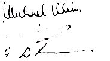

Nascom Journal |
6/80 7/80 |
und gegebenenfalls auch Telefonnummern sind unter den Artikeln aufgeführt.
Nun noch eine Anmerkung zum Schluß: wir haben den Aufbau des JournalS leicht verändert. Die teilweise sehr langen Listings zu den einzelnen Beiträgen haben wir in dieser Ausgabe des JournalS auf die hinteren Ränge, sprich in den Anhang verbannt und durch Nummern gekennzeichnet. Für uns birgt diese Lösung vom Umbruch her viele Vorteile, aber wie ist das mit Ihnen?. Wie gefällt Ihnen diese Lösung? Wir sind gespannt auf Ihre Reaktion; bitte schreiben Sie uns.
So, nun bleibt uns nur noch eines zu sagen: wir, d.h. der Mitarbeiterstab des Nascom – JournalS wünschen Ihnen allen ein frohes Weihnachstfest und alles Gute zum Neuen Jahr.
Die Herausgeber

| Seite 2 von 52 |
|---|